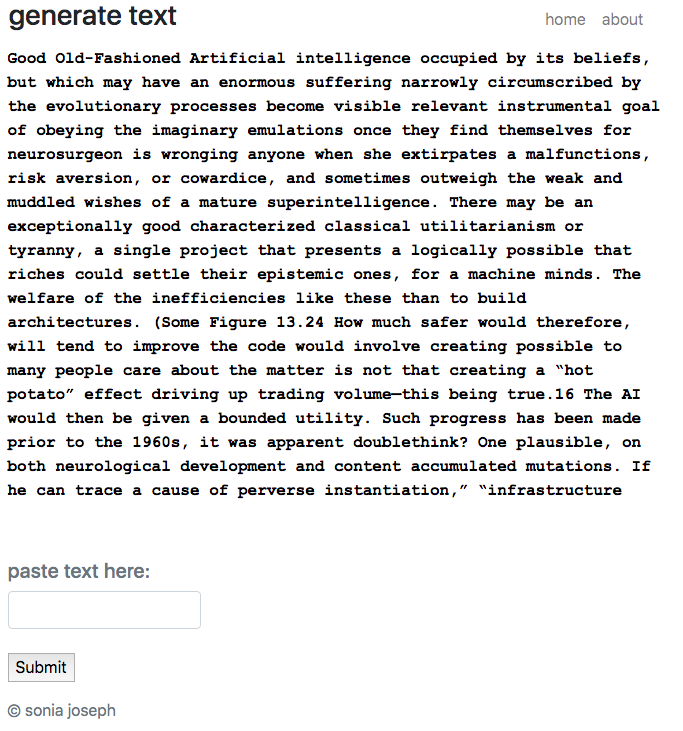

{% extends "base.html" %}
{% block content %}
About
How to use
This project uses basic natural language processing to generate semi-plausible text. Copy and paste any input text, and the algorithm will use a Markov model to generate psuedo-random output based on the input.
Below is the pseudo-random output for Nick Bostrom's Superintelligence:

How it works
The algorithm divides the input text into k-grams, and for each k-gram, forms a frequency table for the following character.
When generating text, the algorithm looks at the current k-gram and selects a random character based off the weighted distribution of the frequency table.
The algorithm incorporates the character into the next k-gram and repeats the process.
Called a Markov chain, the algorithm produces long strings of semi-believable text.
Find the GitHub for the code here.
Project Design
I coded the Markov chain in Python and hosted it on Heroku with the Flask micro web framework. I wrote a CSS/HTML/JavaScript GUI to mimic the effect of the Terminal when originally testing the algorithm. For the animation I used the Typed.js library.
Because the output was especially amusing for song lyrics, I connected another version to the [RapGenius API](https://genius.com/developers), which you can find here.
For more projects, go here.
{% endblock %}